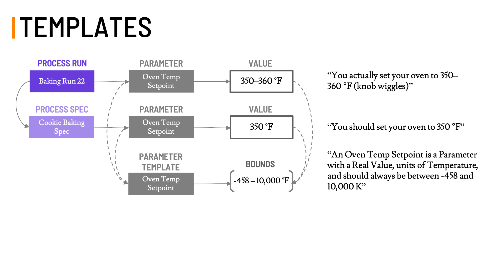

Attribute Templates and Bounds¶
An AttributeTemplate defines a domain concept by giving it a canonical name and bounds, which describes the values that are acceptable for an Attribute.
For example, an attribute template could define a real value bounded between -3 and +17, or it could define a Categorical with the following allowed categories: "salt", "not salt". The values of attributes with Attribute Templates must conform to the bounds specified by the templates. If the value is not compatible with the template (e.g., if the template specifies that the value must be in the range [0, 1] but the value is 2), then the data are invalid.
 Figure1: How Attribute Templates help relate Attributes between Specs and Runs, and provide Bounds for Values.
Each AttributeTemplate is primarily defined by a name, bounds.
AttributeTemplates can also be described with tags, description, and scope.
| Field name | Value type | Default | Description |
|---|---|---|---|
type |
String | Req. | One of: property_template, condition_template, parameter_template |
name |
String | Req. | The name of the template |
bounds |
Bounds | Req. | Description of values that are valid according to the template (see below) |
uids |
Map[String, String] | Empty | A collection of Unique Identifiers |
description |
String | None | Some text describing what this template is |
tags |
Set[String] | Empty set | Tags |
Attribute Templates are critical in defining which quantities are comparable or equivalent. When Attributes are added to core objects (Runs or Specs), they should be associated with an appropriate Attribute Template. This association is meant to inform how Values are collected and aggregated in downstream consumers of GEMD data.
Constraints¶
| Field name | Relationship | Field Name |
|---|---|---|
len(name) |
<= | 128, UTF-8 Encoded |
len(description) |
<= | 32,768 (32KB), UTF-8 Encoded |
Examples¶
{
"type" : "property_template",
"uids" : {
"id" : "2e1bec7e-bda4-441d-bebb-1215bfa6ee0f"
},
"tags" : [
"hardness::indentation::vickers",
"Newage MT91 Tester::004",
"astm_hardness::ASTM E-384"],
"name" : "Vickers Hardness on Machine 4",
"description" : "A Vickers indentation hardness test on the Newage MT91 Tester with machine id #4. Conforms to ASTM standard E-384.",
"bounds" : {
"type" : "real_bounds",
"default_units" : "HV30/15",
"lower_bound" : 0.0,
"upper_bound" : 10000.0
}
}
{
"type": "property_template",
"id" : "2e1bec7e-bda4-441d-bebb-1215bfa6ee0f",
"uids" : {},
"tags" : [
"#noindigo::newtonwaswrong",
"taste::therainbow",
"things_they_are_after::my_lucky_charms",
"marketing::commercials::candy::skittles",
"marketing::characters::cereal::leprechaun"
],
"name" : "Rainbow Colors",
"description" : "Colors in the rainbow",
"bounds" : {
"type" : "categorical_bounds",
"categories" : [
"red",
"orange",
"yellow",
"green",
"blue",
"violet"
]
}
}
Real Bounds¶
Real bounds are defined by a range of finite real values and a unit.
For example:
- The band gap is defined from zero to 20 eV
- The lowest unoccupied molecular orbital (LUMO) is defined from negative 100 to zero eV
- The volume fraction in the austenite phase is defined from 0.0 to 1.0 and is dimensionless
Real bounds can validate distributions over the real numbers.
A real-valued distribution may be non-zero for points outside of the associated real bounds and still be valid. This is because common distributions such as a Gaussian are non-zero everywhere. If a Real Value is allowed to be non-zero outside the associated bounds, the conditions for validation are documented in the description of that type.
| Field name | Value type | Description |
|---|---|---|
type |
String | always real_bounds |
default_units |
String | Unit used to express the bounds |
lower_bound |
Number | the lower bound |
upper_bound |
Number | the upper bound |
Constraints¶
| Field name | Relationship | Field Name |
|---|---|---|
lower_bound |
<= | upper_bound |
Example¶
{
"type" : "real_bounds",
"default_units" : "meters",
"lower_bound" : 0.0,
"upper_bound" : 10.0
}
Integer Bounds¶
Integer bounds are defined by a range of integer values.
For example:
- The number of power-cycles in a battery lifetime test is between 1 and 1,000,000
- The position of a digital knob is between 1 and 10
- The charge on an ion is between -128 and 128
| Field name | Value type | Description |
|---|---|---|
type |
String | always integer_bounds |
lower_bound |
Integer | the inclusive lower bound |
upper_bound |
Integer | the inclusive upper bound |
Constraints¶
| Field name | Relationship | Field Name |
|---|---|---|
lower_bound |
<= | upper_bound |
Example¶
{
"type" : "integer_bounds",
"lower_bound" : -128,
"upper_bound" : 128
}
Categorical Bounds¶
Categorical bounds are defined by a set of valid category names. For example:
- Colors are one of: "Red", "Orange", "Yellow", "Green", "Blue", "Purple"
- Answers are one of: "Animal", "Vegetable", "Mineral"
- Fats are one of: "Saturated", "Mono-unsaturated", "Poly-unsaturated"
| Field name | Value type | Description |
|---|---|---|
type |
String | always categorical_bounds |
categories |
Set[String] | A set of valid categorical values |
Example¶
{
"type" : "categorical_bounds",
"categories" : [
"red",
"orange",
"yellow",
"green",
"blue",
"violet"
]
}
Composition Bounds¶
Composition bounds are defined by a set of valid component names. For example:
- Steel phase is a mixture of Austentite, Allotriomorphic ferrite, Idiomorphic ferrite, Pearlite, ... (there are 10)
- Elemental composition is a mixture of the elements
- Vodka is a mixture of water, ethanol, and contaminants
| Field name | Value type | Description |
|---|---|---|
type |
String | always composition_bounds |
components |
Set[String] | A set of valid component names |
Example¶
{
"type" : "composition_bounds",
"components" : [
"water",
"ethanol",
"contaminants"
]
}
Molecular Structure Bounds¶
Molecular structure bounds are used to describe an attribute template that expects a molecular structure type, but do not have any further parameterization. For example:
- Ligand structure is molecular structure
- Monomer is a molecular structure
| Field name | Value type | Description |
|---|---|---|
type |
String | always molecular_structure_bounds |
Example¶
{
"type" : "molecular_structure_bounds"
}